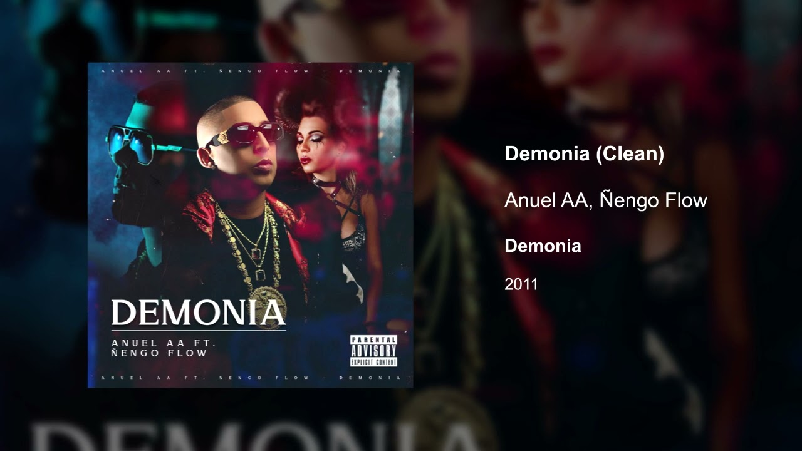
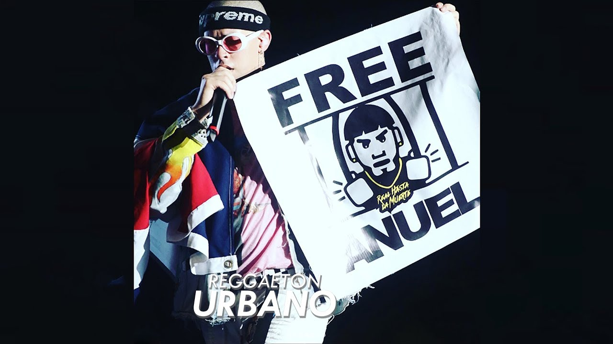
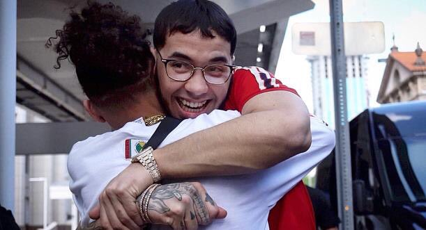
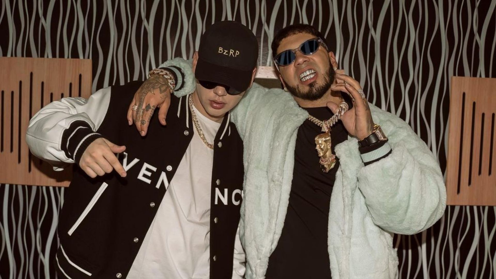

Gazmey conocido artísticamente como Anuel AA, es un cantante puertorriqueño de reggaetón, rap y trap que nació en Santiago (Carolina, Puerto Rico) el 27 de noviembre de 1992. Anuel AA comenzó su carrera musical en el 2011. El primer tema que sacó al mercado se llamó “Demonia”, el cual no tuvo mayor relevancia. 
En el 2012, Anuel firmó contrato con Maybach Music (bajo Spiff TV), un sello discográfico fundado por el rapero estadounidense Rick Ross, que también trabaja con los raperos Meek Mill, Wale y French Montana. El primer mixtape de Anuel fue "Real Hasta la Muerte".
Estrenado el 29 de febrero de 2016, el mixtape cuenta con 13 sencillos recopilatorios, y cuenta con las colaboraciones de grandes artistas del género urbano como Ozuna , Ñengo Flow, Arcángel, De La Ghetto , Lito Kirino, Kendo Kaponi, Lary Over, Bryant Myers, Anonimus, Brytiago y Almighty. El 3 de abril de 2016, el cantante fue detenido por posesión de armas, al salir de un club nocturno en Puerto Rico. Sus fans crearon desde entonces la campaña "Free Anuel" para pedir su liberación.

El 12 de mayo de 2018, Anuel AA fue puesto en libertad, después de estar dos años, un mes y nueve días, pero volvió a prisión 22 días después, hasta cumplir con el resto de su sentencia. El 17 de julio de 2018, Anuel AA salió de prisión definitivamente, cumpliendo su condena de 30 meses. A su vez, ese día lanzó un álbum inédito y sorpresa titulado:”Real Hasta La Muerte”. Luego realizó diversas colaboraciones, entre estas junto a Tekashi, 6ix9ine. También hizo “Culpables”, junto a Karol G .

El 19 de julio de 2019 lanzó “China”, tema que cuenta con la colaboración de Daddy Yankee , Ozuna , Karol G y J Balvin.
El 2 de abril de 2020 lanza junto a su novia, Karol G el video y la cancion "Follow", hecha desde su casa en plena cuarentena por el coronavirus. El 3 de abril,rememora la fecha de su arresto, con el lanzamiento de su canción "3 de Abril". El 29 de mayo da a conocer su nuevo álbum titulado "Emmanuel" que cuenta con grandes colaboraciones.
El 22 de enero de 2021 lanza en conjunto con Ozuna "Los Dioses",producción discográfica que contiene 12 temas inéditos interpretados por los cantautores de origen puertorriqueños. El 11 de febrero colabora en "Location", canción de karol G que hace junto a J Balvin.
En marzo de 2021 estrena "Whoopty (fi. Ozuna y CJ)".
El 3 de noviembre presenta "BZRP Music Sessions Vol. 46" junto a Bizarrap.
